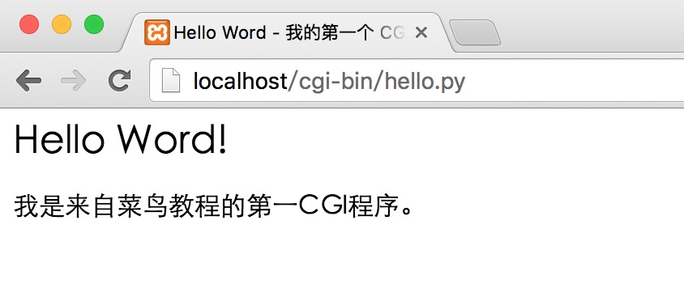
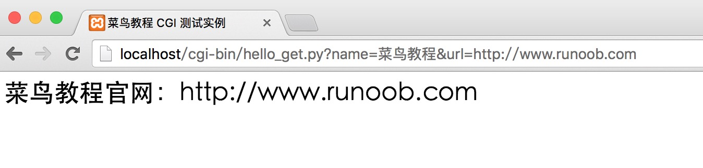
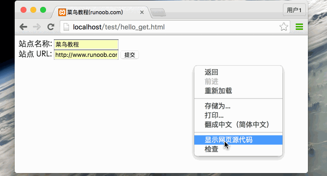
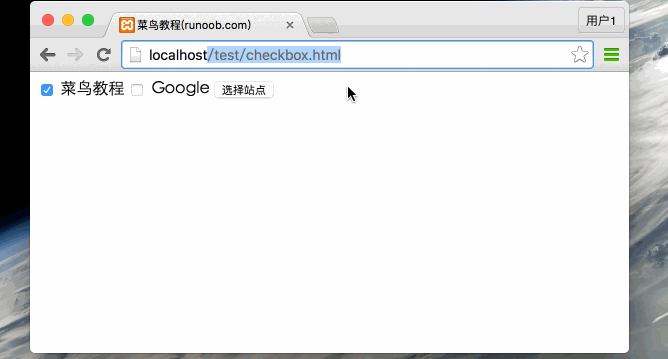
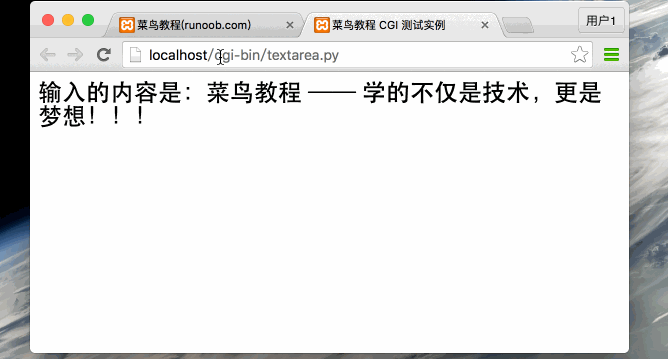
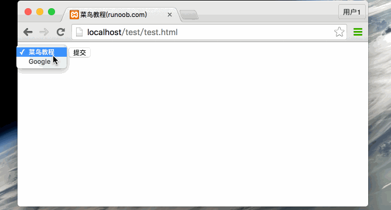
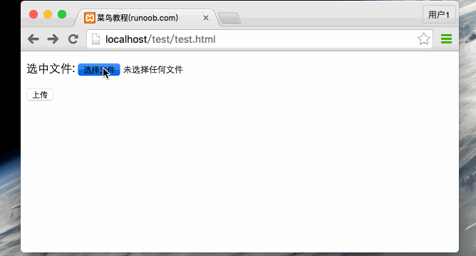

Python CGIプログラミング
CGIとは
CGIは現在NCSAによって保守されています。NCSAはCGIを次のように定義しています：
CGI(Common Gateway Interface)は、共通ゲートウェイインターフェースであり、サーバー（例：HTTPサーバー）上で動作するプログラムで、クライアントのHTMLページとのインターフェースを提供します。
Webページの閲覧
CGIがどのように動作するかをよりよく理解するために、Webページ上でリンクやURLをクリックしたときの流れを見てみましょう：
- 1. ブラウザを使用してURLにアクセスし、HTTP Webサーバーに接続します。
- 2. Webサーバーはリクエスト情報を受信するとURLを解析し、アクセスされたファイルがサーバー上に存在するかどうかを調べます。存在する場合はファイルの内容を返し、存在しない場合は対応するエラーメッセージを返します。
- 3. ブラウザはサーバーから情報を受信し、受信したファイルまたはエラーメッセージを表示します。
CGIプログラムには、Pythonスクリプト、PERLスクリプト、SHELLスクリプト、CまたはC++プログラムなどがあります。
CGIアーキテクチャ図

Webサーバーのサポートと設定
CGIプログラミングを行う前に、WebサーバーがCGIをサポートし、CGIのハンドラが設定されていることを確認してください。
ApacheのCGIサポート設定：
CGIディレクトリを設定します：
ScriptAlias /cgi-bin/ /var/www/cgi-bin/
すべてのHTTPサーバーが実行するCGIプログラムは、事前に設定されたディレクトリに保存されます。このディレクトリはCGIディレクトリと呼ばれ、慣例として/var/www/cgi-binディレクトリと命名されています。
CGIファイルの拡張子は.cgiですが、Pythonでは.py拡張子も使用できます。
デフォルトでは、Linuxサーバーはcgi-binディレクトリを/var/wwwとして設定して実行します。
他のCGIスクリプト実行ディレクトリを指定したい場合は、httpd.conf設定ファイルを次のように変更できます：
<Directory "/var/www/cgi-bin"> AllowOverride None Options +ExecCGI Order allow,deny Allow from all </Directory>
AddHandlerに .py 拡張子を追加すると、.py で終わるPythonスクリプトファイルにアクセスできるようになります：
AddHandler cgi-script .cgi .pl .py
最初のCGIプログラム
Pythonを使用して最初のCGIプログラムを作成します。ファイル名はhello.pyで、ファイルは/var/www/cgi-binディレクトリにあり、内容は次のとおりです：
例
print ("Content-type:text/html")
print () # 空行。サーバーにヘッダーが終了したことを知らせます。
print ('<html>')
print ('<head>')
print ('<meta charset="utf-8">')
print ('<title>Hello Word - 私の最初のCGIプログラム！</title>')
print ('</head>')
print ('<body>')
print ('<h2>Hello Word! 私は初心者向けチュートリアルの最初のCGIプログラムです</h2>')
print ('</body>')
print ('</html>')
ファイルを保存した後、hello.pyを変更し、ファイルの権限を755に変更します：
chmod 755 hello.py
上記のプログラムをブラウザでアクセスすると、次のように表示されます：

このhello.pyスクリプトは単純なPythonスクリプトです。スクリプトの最初の行で出力される"Content-type:text/html"はブラウザに送信され、ブラウザに表示するコンテンツタイプが"text/html"であることを伝えます。
printで空行を出力して、サーバーにヘッダー情報が終了したことを知らせます。
HTTPヘッダー
hello.pyファイルの内容にある"Content-type:text/html"はHTTPヘッダーの一部であり、ブラウザに送信してファイルのコンテンツタイプをブラウザに通知します。
HTTPヘッダーの形式は次のとおりです：
HTTP 字段名: 字段内容
例：
Content-type: text/html
次の表は、CGIプログラムでHTTPヘッダーによく使用される情報を示しています：
| 头 | 説明 |
|---|---|
| Content-type: | リクエストされたエンティティに対応するMIME情報。例: Content-type:text/html |
| Expires: Date | 応答の有効期限の日時 |
| Location: URL | 受信者をリクエストされたURLではない場所にリダイレクトしてリクエストを完了するか、新しいリソースを識別するために使用されます。 |
| Last-modified: Date | リクエストされたリソースの最終更新日時 |
| Content-length: N | リクエストのコンテンツ長 |
| Set-Cookie: String | Http Cookieの設定 |
CGI環境変数
すべてのCGIプログラムは以下の環境変数を受け取ります。これらの変数はCGIプログラムで重要な役割を果たします：
| 変数名 | 説明 |
|---|---|
| CONTENT_TYPE | この環境変数の値は、渡された情報のMIMEタイプを示します。現在、環境変数CONTENT_TYPEは通常、application/x-www-form-urlencodedで、データがHTMLフォームから来ていることを示します。 |
| CONTENT_LENGTH | サーバーがPOSTメソッドでCGIプログラムと通信する場合、この環境変数は標準入力（STDIN）から読み取れる有効なデータのバイト数を示します。入力データを読み取るときはこの変数を使用する必要があります。 |
| HTTP_COOKIE | クライアント内のCOOKIEの内容。 |
| HTTP_USER_AGENT | バージョン番号やその他の固有データを含むクライアントブラウザの情報を提供します。 |
| PATH_INFO | この環境変数の値は、CGIプログラム名の直後にある他のパス情報を示します。これはしばしばCGIプログラムのパラメータとして現れます。 |
| QUERY_STRING | サーバーとCGIプログラムの間で情報を渡す方法がGETの場合、この環境変数の値が渡される情報そのものです。この情報はCGIプログラム名の後に続き、両者の間は疑問符'?'で区切られます。 |
| REMOTE_ADDR | この環境変数の値は、リクエストを送信したクライアントのIPアドレスです。例えば上記の192.168.1.67です。この値は常に存在します。また、これはWebクライアントがWebサーバーに提供する必要がある唯一の識別子であり、CGIプログラムで異なるWebクライアントを区別するために使用できます。 |
| REMOTE_HOST | この環境変数の値には、CGIリクエストを送信したクライアントのホスト名が含まれます。照会をサポートしていない場合は、この環境変数を定義する必要はありません。 |
| REQUEST_METHOD | スクリプトが呼び出されたメソッドを提供します。HTTP/1.0プロトコルを使用するスクリプトの場合、GETとPOSTのみが意味を持ちます。 |
| SCRIPT_FILENAME | CGIスクリプトの完全パス |
| SCRIPT_NAME | CGIスクリプトの名前 |
| SERVER_NAME | これは、あなたのWEBサーバーのホスト名、エイリアス、またはIPアドレスです。 |
| SERVER_SOFTWARE | この環境変数の値には、CGIプログラムを呼び出したHTTPサーバーの名前とバージョン番号が含まれます。例えば、上記の値はApache/2.2.14(Unix)です。 |
以下は、CGIの環境変数を出力する簡単なCGIスクリプトです：
例
import os
print ("Content-type: text/html")
print ()
print ("<meta charset=\"utf-8\">")
print ("<b>環境変数</b><br>")
print ("<ul>")
for key in os.environ.keys():
print ("<li><span style='color:green'>%30s </span> : %s </li>" % (key,os.environ[key]))
print ("</ul>")
上記をtest.pyとして保存し、ファイルの権限を755に変更して実行すると、結果は次のようになります：

GETとPOSTメソッド
ブラウザクライアントは2つの方法でサーバーに情報を渡します。それがGETメソッドとPOSTメソッドです。
GETメソッドを使用したデータ転送
GETメソッドはエンコードされたユーザー情報をサーバーに送信します。データ情報はリクエストページのURLに含まれ、"?"記号で区切られます。次のようになります：
http://www.test.com/cgi-bin/hello.py?key1=value1&key2=value2GETリクエストに関するその他の注意事項：
- GETリクエストはキャッシュされる可能性があります。
- GETリクエストはブラウザの履歴に残ります。
- GETリクエストはブックマークに保存できます。
- GETリクエストは機密データを扱う際に使用すべきではありません。
- GETリクエストには長さの制限があります。
- GETリクエストはデータを取得するためだけに使用すべきです。
簡単なURLの例：GETメソッド
以下は、GETメソッドを使用してhello_get.pyプログラムに2つのパラメータを送信する簡単なURLです：
/cgi-bin/hello_get.py?name=菜鸟教程&url=http://www.runoob.com
以下は hello_get.py ファイルのコードです。
例
# CGI処理モジュール
import cgi, cgitb
# FieldStorage のインスタンスを作成
form = cgi.FieldStorage()
# データを取得
site_name = form.getvalue('name')
site_url = form.getvalue('url')
print ("Content-type:text/html")
print ()
print ("<html>")
print ("<head>")
print ("<meta charset=\"utf-8\">")
print ("<title>Runoob CGI テスト例</title>")
print ("</head>")
print ("<body>")
print ("<h2>%s公式サイト：%s</h2>" % (site_name, site_url))
print ("</body>")
print ("</html>")
ファイル保存後、hello_get.py を修正し、ファイルの権限を 755 に変更します：
chmod 755 hello_get.py
ブラウザのリクエスト出力結果：

簡単なフォームの例：GETメソッド
以下は、HTML フォームを介して GET メソッドを使用してサーバーに2つのデータを送信する例です。送信先のサーバースクリプトも同じく hello_get.py ファイルです。hello_get.html のコードは次のとおりです：
例
<html>
<head>
<meta charset="utf-8">
<title>Runoob(runoob.com)</title>
</head>
<body>
<form action="/cgi-bin/hello_get.py" method="get">
サイト名:<input type="text" name="name"> <br />
サイトURL:<input type="text" name="url" />
<input type="submit" value="送信" />
</form>
</body>
</html>
デフォルトでは、cgi-bin ディレクトリにはスクリプトファイルのみ配置できます。そのため、hello_get.html を test ディレクトリに保存し、ファイルの権限を 755 に変更します：
chmod 755 hello_get.html
Gif のデモは次のとおりです：

POSTメソッドを使用したデータ送信
POSTメソッドを使用してサーバーにデータを送信する方が安全で信頼性が高く、ユーザーパスワードなどの機密情報を送信する場合は POST を使用してデータを転送する必要があります。
以下も同じく hello_get.py ですが、ブラウザから送信された POST フォームデータも処理できます。
例
# CGI処理モジュール
import cgi, cgitb
# FieldStorage のインスタンスを作成
form = cgi.FieldStorage()
# データを取得
site_name = form.getvalue('name')
site_url = form.getvalue('url')
print ("Content-type:text/html")
print ()
print ("<html>")
print ("<head>")
print ("<meta charset=\"utf-8\">")
print ("<title>Runoob CGI テスト例</title>")
print ("</head>")
print ("<body>")
print ("<h2>%s公式サイト：%s</h2>" % (site_name, site_url))
print ("</body>")
print ("</html>")
以下は、フォームが POST メソッド（method="post"）を使用してサーバースクリプト hello_get.py にデータを送信します：
例
<html>
<head>
<meta charset="utf-8">
<title>Runoob(runoob.com)</title>
</head>
<body>
<form action="/cgi-bin/hello_get.py" method="post">
サイト名:<input type="text" name="name"> <br />
サイトURL:<input type="text" name="url" />
<input type="submit" value="送信" />
</form>
</body>
</html>
</form>
Gif のデモは次のとおりです：

CGIプログラムによるcheckboxデータの受け渡し
チェックボックスは、1つまたは複数のオプションデータを送信するために使用します。HTMLコードは次のとおりです：
例
<html>
<head>
<meta charset="utf-8">
<title>Runoob(runoob.com)</title>
</head>
<body>
<form action="/cgi-bin/checkbox.py" method="POST" target="_blank">
<input type="checkbox" name="runoob" value="on" />Runoob
<input type="checkbox" name="google" value="on" /> Google
<input type="submit" value="サイトを選択" />
</form>
</body>
</html>
以下は checkbox.py ファイルのコードです：
例
# CGI処理モジュールを導入
import cgi, cgitb
# FieldStorage のインスタンスを作成
form = cgi.FieldStorage()
# フィールドデータを受信
if form.getvalue('google'):
google_flag = "はい"
else:
google_flag = "いいえ"
if form.getvalue('runoob'):
runoob_flag = "はい"
else:
runoob_flag = "いいえ"
print ("Content-type:text/html")
print ()
print ("<html>")
print ("<head>")
print ("<meta charset=\"utf-8\">")
print ("<title>Runoob CGI テスト例</title>")
print ("</head>")
print ("<body>")
print ("<h2>Runoob が選択されたかどうか : %s</h2>" % runoob_flag)
print ("<h2> Google が選択されたかどうか : %s</h2>" % google_flag)
print ("</body>")
print ("</html>")
checkbox.py の権限を変更します：
chmod 755 checkbox.py
ブラウザでのアクセス Gif デモ図：

CGIプログラムによるRadioデータの受け渡し
ラジオボタンはサーバーに1つのデータのみを送信します。HTMLコードは次のとおりです：
例
<html>
<head>
<meta charset="utf-8">
<title>Runoob(runoob.com)</title>
</head>
<body>
<form action="/cgi-bin/radiobutton.py" method="post" target="_blank">
<input type="radio" name="site" value="runoob" />Runoob
<input type="radio" name="site" value="google" /> Google
<input type="submit" value="送信" />
</form>
</body>
</html>
radiobutton.py スクリプトのコードは次のとおりです：
例
# CGI処理モジュールを導入
import cgi, cgitb
# FieldStorage のインスタンスを作成
form = cgi.FieldStorage()
# フィールドデータを受信
if form.getvalue('site'):
site = form.getvalue('site')
else:
site = "送信データが空です"
print ("Content-type:text/html")
print ()
print ("<html>")
print ("<head>")
print ("<meta charset=\"utf-8\">")
print ("<title>Runoob CGI テスト例</title>")
print ("</head>")
print ("<body>")
print ("<h2>選択されたサイトは %s</h2>" % site)
print ("</body>")
print ("</html>")
radiobutton.py の権限を変更します：
chmod 755 radiobutton.py
ブラウザでのアクセス Gif デモ図：

CGIプログラムによるTextareaデータの受け渡し
Textarea はサーバーに複数行のデータを送信します。HTMLコードは次のとおりです：
例
<html>
<head>
<meta charset="utf-8">
<title>Runoob(runoob.com)</title>
</head>
<body>
<form action="/cgi-bin/textarea.py" method="post" target="_blank">
<textarea name="textcontent" cols="40" rows="4">
ここに内容を入力してください...
</textarea>
<input type="submit" value="送信" />
</form>
</body>
</html>
textarea.py スクリプトのコードは次のとおりです：
例
# CGI処理モジュールを導入
import cgi, cgitb
# FieldStorage のインスタンスを作成
form = cgi.FieldStorage()
# フィールドデータを受信
if form.getvalue('textcontent'):
text_content = form.getvalue('textcontent')
else:
text_content = "コンテンツがありません"
print ("Content-type:text/html")
print ()
print ("<html>")
print ("<head>")
print ("<meta charset=\"utf-8\">")
print ("<title>Runoob CGI テスト例</title>")
print ("</head>")
print ("<body>")
print ("<h2>入力された内容：%s</h2>" % text_content)
print ("</body>")
print ("</html>")
textarea.py の権限を変更します：
chmod 755 textarea.py
ブラウザでのアクセス Gif デモ図：

CGIプログラムによるドロップダウンデータの受け渡し。
HTML ドロップダウンボックスのコードは次のとおりです：
例
<html>
<head>
<meta charset="utf-8">
<title>Runoob(runoob.com)</title>
</head>
<body>
<form action="/cgi-bin/dropdown.py" method="post" target="_blank">
<select name="dropdown">
<option value="runoob" selected>Runoob</option>
<option value="google">Google</option>
</select>
<input type="submit" value="送信"/>
</form>
</body>
</html>
dropdown.py スクリプトのコードは次のとおりです：
例
# CGI処理モジュールを導入
import cgi, cgitb
# FieldStorage のインスタンスを作成
form = cgi.FieldStorage()
# フィールドデータを受信
if form.getvalue('dropdown'):
dropdown_value = form.getvalue('dropdown')
else:
dropdown_value = "コンテンツがありません"
print ("Content-type:text/html")
print ()
print ("<html>")
print ("<head>")
print ("<meta charset=\"utf-8\">")
print ("<title>Runoob CGI テスト例</title>")
print ("</head>")
print ("<body>")
print ("<h2>選択されたオプション：%s</h2>" % dropdown_value)
print ("</body>")
print ("</html>")
dropdown.py の権限を変更します：
chmod 755 dropdown.py
ブラウザでのアクセス Gif デモ図：

CGIでのCookieの使用
http プロトコルの大きな欠点は、ユーザーの身元を判断しないことです。これによりプログラマーに大きな不便をもたらしますが、cookie 機能の登場によってこの不足が補われました。
cookie は、クライアントがスクリプトにアクセスする際に、クライアントのブラウザを介してクライアントのハードディスクに記録データを書き込みます。次回クライアントがスクリプトにアクセスしたときにデータ情報を取得し、身元判別の機能を実現します。cookie は身元検証によく使用されます。
Cookieの構文
http cookie の送信は http ヘッダーを介して行われ、ファイルの転送よりも先に行われます。ヘッダーの set-cookie の文法は次のとおりです：
Set-cookie:name=name;expires=date;path=path;domain=domain;secure
- name=name:cookie の値を設定する必要があります（name には ";" と "," を使用できません）。複数の name 値がある場合は ";" で区切ります。例：name1=name1;name2=name2;name3=name3。
- expires=date:cookie の有効期限、形式： expires="Wdy,DD-Mon-YYYY HH:MM:SS"
- path=path: cookie のサポートパスを設定します。path がパスの場合、cookie はこのディレクトリ下のすべてのファイルとサブディレクトリに有効です。例： path="/cgi-bin/"。path がファイルの場合、cookie はこのファイルのみに有効です。例：path="/cgi-bin/cookie.cgi"。
- domain=domain:cookie が有効となるドメイン名。例：domain="www.runoob.com"
- secure:このフラグを指定すると、cookie は SSL プロトコルの https サーバーを介してのみ送信できます。
- cookie の受信は、環境変数 HTTP_COOKIE を設定することで実現されます。CGI プログラムはこの変数を参照して cookie 情報を取得できます。
Cookieの設定
Cookie の設定は非常に簡単で、cookie は http ヘッダーで個別に送信されます。以下の例では、cookie に name と expires を設定しています：
例
print ('Set-Cookie: name="Runoob";expires=Wed, 28 Aug 2016 18:30:00 GMT')
print ('Content-Type: text/html')
print ()
print ("""
<html>
<head>
<meta charset="utf-8">
<title>Runoob(runoob.com)</title>
</head>
<body>
<h1>Cookie set OK!</h1>
</body>
</html>
""")
上記のコードを cookie_set.py に保存し、cookie_set.py の権限を変更します：
chmod 755 cookie_set.py
上記の例では、Set-Cookie ヘッダー情報を使用して Cookie 情報を設定しています。オプションでは、Cookie のその他の属性（有効期限 Expires、ドメイン Domain、パス Path）が設定されています。これらの情報は"Content-type:text/html"の前に設定されます。
Cookie情報の取得
Cookie 情報の取得ページは非常に簡単です。Cookie 情報は CGI の環境変数 HTTP_COOKIE に保存され、保存形式は次のとおりです：
key1=value1;key2=value2;key3=value3....
以下は、cookie 情報を取得する簡単な CGI プログラムです：
例
# モジュールをインポート
import os
import http.cookies
print ("Content-type: text/html")
print ()
print ("""
<html>
<head>
<meta charset="utf-8">
<title>菜鸟教程(runoob.com)</title>
</head>
<body>
<h1>Cookie情報の読み取り</h1>
""")
if 'HTTP_COOKIE' in os.environ:
cookie_string=os.environ.get('HTTP_COOKIE')
c= http.cookies.SimpleCookie()
# c=Cookie.SimpleCookie()
c.load(cookie_string)
try:
data=c['name'].value
print ("cookie data: "+data+"<br>")
except KeyError:
print ("cookie が設定されていないか、期限が切れています<br>")
print ("""
</body>
</html>
""")
上記のコードを cookie_get.py として保存し、cookie_get.py のパーミッションを変更します：
chmod 755 cookie_get.py
上記のcookie設定デモGIFは次のとおりです：

ファイルアップロードの例
HTMLでファイルをアップロードするフォームには、次の設定が必要です：enctype属性はmultipart/form-data、コードは次のとおりです：
例
<html>
<head>
<meta charset="utf-8">
<title>菜鸟教程(runoob.com)</title>
</head>
<body>
<form enctype="multipart/form-data"
action="/cgi-bin/save_file.py" method="post">
<p>ファイルを選択:<input type="file" name="filename" /></p>
<p><input type="submit" value="アップロード" /></p>
</form>
</body>
</html>
save_file.py スクリプトファイルのコードは次のとおりです：
例
import cgi, os
import cgitb; cgitb.enable()
form = cgi.FieldStorage()
# ファイル名を取得
fileitem = form['filename']
# ファイルがアップロードされたかどうかを確認
if fileitem.filename:
# ファイルパスを設定
fn = os.path.basename(fileitem.filename)
open('/tmp/' + fn, 'wb').write(fileitem.file.read())
message = 'ファイル "' + fn + '" アップロード成功'
else:
message = 'ファイルはアップロードされていません'
print ("""\
Content-Type: text/html\n
<html>
<head>
<meta charset="utf-8">
<title>菜鸟教程(runoob.com)</title>
</head>
<body>
<p>%s</p>
</body>
</html>
""" % (message,))
上記のコードを save_file.py として保存し、save_file.py のパーミッションを変更します：
chmod 755 save_file.py
上記のcookie設定デモGIFは次のとおりです：

使用しているシステムがUnix/Linuxの場合は、ファイル区切り文字を置き換える必要があります。Windowsではopen()文を使用するだけで十分です：
fn = os.path.basename(fileitem.filename.replace("\\", "/" ))
ファイルダウンロードダイアログ
まず現在のディレクトリに foo.txt ファイルを作成し、プログラムのダウンロードに使用します。
ファイルのダウンロードはHTTPヘッダー情報を設定することで実現します。コードは次のとおりです：
例
# HTTP ヘッダー
print ("Content-Disposition: attachment; filename=\"foo.txt\"")
print ()
# ファイルを開く
fo = open("foo.txt", "rb")
str = fo.read();
print (str)
# ファイルを閉じる
fo.close()
leo
leo***ocd.com
最初のCGIプログラムのこの部分では、英語のLinuxシステムの場合、チュートリアルのサンプルコードに従って作成・実行するとエラーがスローされます。解決策は2つあります。1つはプログラムを修正してデフォルトのstdoutを変更する方法で、修正後のプログラムは次のとおりです：
#!/usr/bin/python3 import sys import io sys.stdout = io.TextIOWrapper(sys.stdout.buffer, encoding='utf-8') print ("Content-type:text/html") print () # 空行，告诉服务器结束头部 print ('<html>') print ('<head>') print ('<meta charset="utf-8">') print ('<title>Hello Word - 我的第一个 CGI 程序！</title>') print ('</head>') print ('<body>') print ('<h2>Hello Word! 我是来自菜鸟教程的第一CGI程序</h2>') print ('</body>') print ('</html>')または、システムの i18n を変更してもかまいません。
leo
leo***ocd.com